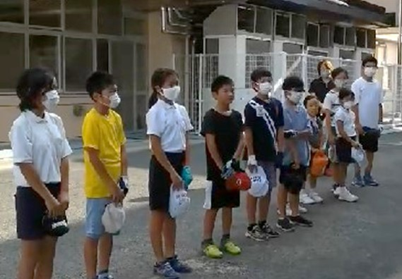
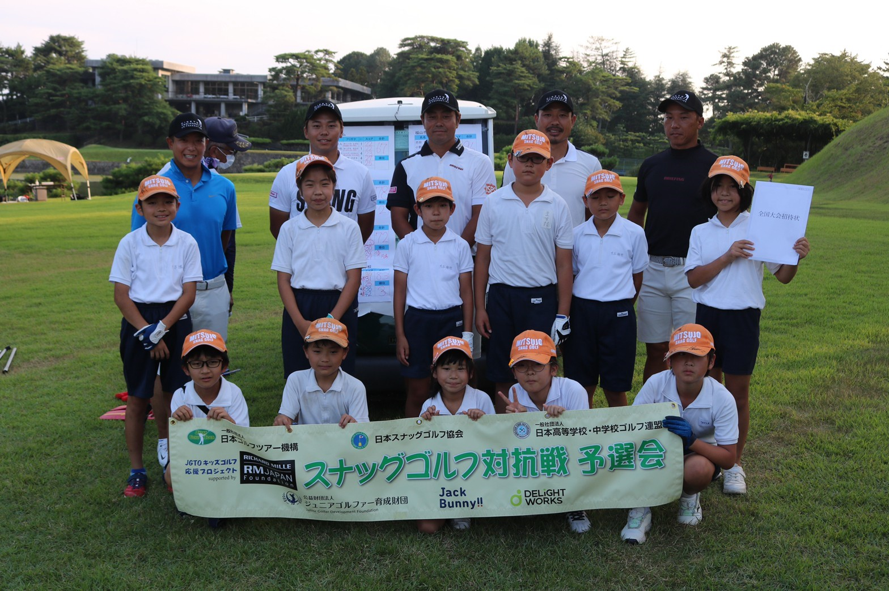
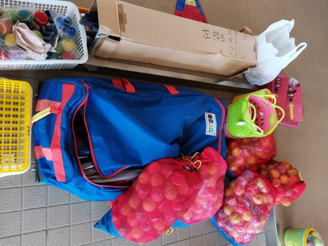

三ツ城オリンピック 2021.8.7
東京オリンピックゴルフ女子で稲見萌寧プロが銀メダルに輝いたこの日、三ツ城スナッグゴルフクラブでもオリンピックを開催しました。
OB、OGを含め総勢24名が、金銀銅メダル(保護者はビールとおつまみ)を目指して白熱した戦いを繰り広げました。
途中、東京オリンピック同様、雷雨接近で中断”ＴＴ”
先輩たちの卓越したプレーと、”教えて！先輩！！”に丁寧に答えてもらい、お盆休み前の有意義なひと時を過ごせました。
「先輩、また一緒にプレーしましょう！！」
校長先生に報告しました 2021.8.4

JGO全国大会西日本の切符をつかみ取ったことを、校長先生、主幹先生に報告しました。
いつもグランドや中庭を使わせっていただき、ありがとうございます！
全国大会でも優勝できるように頑張ります！！
校長先生からは、全国大会でもがんばれ、と励ましのお言葉をいただきました。
谷原杯兼広島県予選会で優勝しました！ 2021.8.1

団体の部優勝 東広島市立三ツ城小学校 72ストローク！
ベストスコア賞、交流の部1位、2位、3位。アルバトロス賞2名！！
みんな暑い中、よく頑張りました！！！
全国大会の切符をつかみ取ったね。
谷原プロを始めドリームチームの登場にも大興奮！
ほんとうにおめでとう！！！
安芸カントリー俱楽部で練習してきました 2021.7.31
明日は谷原杯兼広島県予選会。
入野郵便局長さんのお取り計らいで、安芸カントリー俱楽部で前日練習をさせて頂きました。
いつも練習をさせて頂いている八本松コースさんはもちろん、安芸カントリー俱楽部さん、入野郵便局長さんには感謝しかありません。
入野郵便局長さんも飛び入り参加してくださり、アンジュレーションのきついコースで貴重な練習をすることができました。
明日の予選会、全国大会への切符を目指して頑張るぞ！
JGTOカップ全国大会in西郷村 2021.7.17
 第18回スナッグゴルフ対抗戦JGTOカップ全国大会in西郷村が2年ぶりに開催されました。
昨年は新型コロナウィルス感染症の影響で大会が中止となり、悔しい思いをした部員たち。
今年は、東日本大会（福島県西郷村）と西日本大会（兵庫県三木市 11月20日（土）予定）の2回に分けての開催です。
開催関係者、協賛の皆様に感謝！！
第18回スナッグゴルフ対抗戦JGTOカップ全国大会in西郷村が2年ぶりに開催されました。
昨年は新型コロナウィルス感染症の影響で大会が中止となり、悔しい思いをした部員たち。
今年は、東日本大会（福島県西郷村）と西日本大会（兵庫県三木市 11月20日（土）予定）の2回に分けての開催です。
開催関係者、協賛の皆様に感謝！！
東日本大会優勝は茨城県の常陸大宮市立大宮小学校で76ストローク!
宮里優作プロひいきるJGTOドリームチームは貫禄の72ストローク!!
西日本の予選会はいよいよ8月1日から。
何を感じ、考え、どう行動する？？
かんゴル、楽しみ♪楽しんで♪♪
谷原杯のメンバーが発表されました 2021.7.10
スナッグゴルフ対抗戦 広島県予選会 谷原秀人ジュニアクラッシック・スナッグゴルフ大会の団体戦メンバー6人が発表されました。
メンバーからの決意表明。「自分の1打はチームの1打！」「メンバーを思い」「1打1打を大切に」「1パットで決めて」「自己ベストを出して」「優勝目指してがんばります！！」
他の部員や先輩の思いを胸に、優勝めざして頑張れ!!
個人戦メンバーも、まだまだ何があるかわからない。
それぞれの目標に向かってGo for it!
道具をありがとうございました！ 2021.6.30

「スナッグさん、これ使わないかね？」
主幹先生はじめ、三ツ城小の先生方が廃校になった学校から道具をたくさん頂いて帰ってくださいました。
ランチャー、ローラー、ランチパット、ボールにフラッグ！こんなに良いんですか？？？
実は今、部費の使い方に頭をひねっていたところ。
助かります！
早速、使わせていただいています。
廃校になった学校の皆様、三ツ城小の先生方、本当にありがとうございました！！
新入部員が入りました！ 2021.6.29
 緊急事態宣言が明けて、再始動！
緊急事態宣言が明けて、再始動！
そんな中、2人のかわいい部員が入部してくれました。
低学年のSちゃんとAちゃん。
新しい風！吹いてきた！！
体験の時は、先輩がやさしく教えてくれたよね。
三ツ城の伝統。～先輩は後輩にやさしく～
つないでいこう♪
練習再開 2021.6.21
 緊急事態宣言が明けて久しぶりの練習日。
緊急事態宣言が明けて久しぶりの練習日。
やっぱりいいね！みんなでの練習！！
今日はショートコースを重点的に、相手を思ってのアプローチ、実力テストの練習をしました。
予選会の目標を決めてくる宿題も。
練習が終わって早速書いていたNちゃん。
どんな目標をたてたのかな！？
目標に向かって！！Go for it！！
みんなの笑顔が見られた嬉しい1日でした！
JGTO予選会が始まりました 2021.6.12
昨年はコロナ禍で全国大会が中止され、大きな目標を失った部員達。
今年は新型コロナ対策を徹底し、東日本と西日本の2会場に分かれ、新たな形で第18回スナッグゴルフ対抗戦JGTOカップ全国大会の開催が決まりました。
全ての開催関係者に感謝！！
子ども達に夢を、ありがとうございます！！
我らが広島県予選会は8月1日と8月28日。
緊急事態宣言下で集まっての練習はまだできませんが、各自家練でレベルアップしているよね！？
また、みんなと練習できるのを楽しみにしてま～す♪
JGTOカップ全国大会(外部リンク)